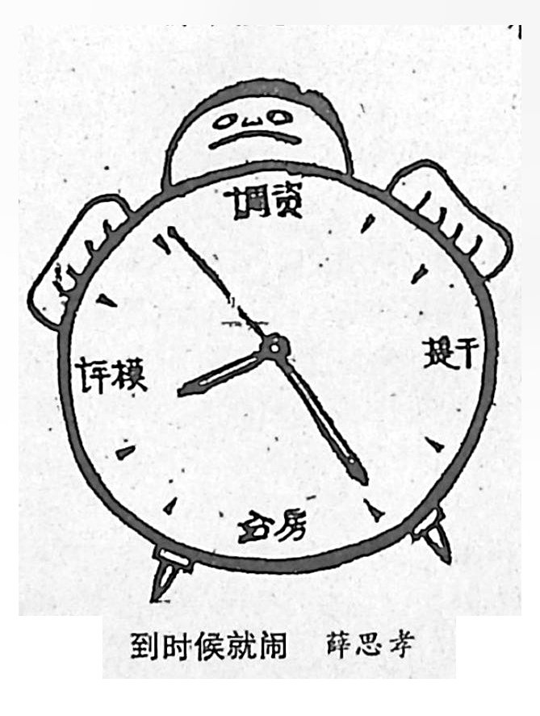

薛思孝 《人事》1988年第1期（总第28期），第46页
到时候就闹
When the Time Comes, It Goes Off
- Text in the drawing
- 调资 / 提干 / 分房 / 评模
Wage adjustment / Promotion to cadre status / Housing allocation / Choosing model workers - Description
- An alarm clock with a scowling face on its bell; the hours on its dial are wage adjustment, promotion to cadre status, housing allocation and the choosing of model workers.
- Note
- 闹 means both “to ring” (an alarm) and “to make a fuss”: every time pay, promotions, flats or honours are handed out, the unit erupts in disputes.
- Artist
- Xue Sixiao 薛思孝
- Published in
- 《人事》1988年第1期（总第28期）, p. 46
- Themes
- Promotion · Privilege

Cite
Xue Sixiao, “到时候就闹” [When the Time Comes, It Goes Off], Renshi (Personnel) 《人事》, 1988, no. 1, p. 46.